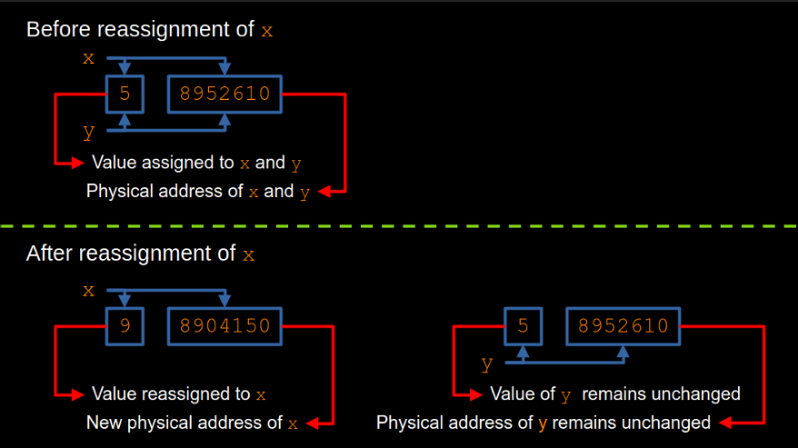
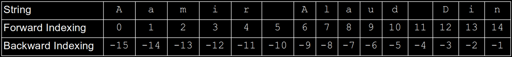

The symbol = is not equality symbol, but assignment operator which assigns the output of right side to the variable on the left side.
Variable names cannot be defined randomly but there are rules for naming variables and the names must be logical.
The variables can be printed using the print function.
The simplest method of printing is by giving variable name as input to the print function within paranthesis.
The mastery of printing lies in understanding the f-string format completely.
Concatenation is the art of printing different data types together and
monospace fonts play a vital role in controlling the printing.
Objectives
After taking this lecture and studying, you should be able to:
Describe the meaning of immutability and identity in your own words.
Describe, in your own words, the binary operation prcedence in mathematical computations.
Use basic arithmetics for scientific computation in python.
Use strings and lists with indexing and slicing
The Why Section
If you assign a single value (data) to two variables a and b and you reassign a new value to a, will the value of b also change?
Consider the following mathematical computation.
\[
x = 3
\]
\[
y = 5
\]
\[
\frac{x + y}{2}=4
\]
If we program this computation, it may be something like this.
x = 3
y = 5
x + y/2
The output of this program is shown below
5.5
The outcome is not as per the expectation.
Why the result of our computation is wrong?
Is there any hierarchy of arithmetic operations in python?
If yes,what is the hierarchy of using arithmetic operations?
Sometimes, we have to work with some part of a string or some defined values in a list of numbers.
How to work with parts of strings and lists?
We answer these questions shortly.
Immutability and Identity
Once a python variable is defined (assigned with some data), its value cannot be changed unless reassigned with some other value.
x = -5
y = x
This code assigns a value of -5 to x and y.
Next, we reassign the a value to x as shown below.
x = 13
Will this reassignment change the value of y also?
The value of y will not chage.
Before reassignment of x, the location addresses of x and y are the same.
After reassignment of x, the location addresses of x and y become different.
See the program on the location addresses of both variables before and after reassignment of x.
It means, python objects are immutable.
Python objects don’t change once created, however, variable names may be reassigned to refer to a different object.

Figure 1. Immutability of Python variables.
Basic Arithmetics
Operators in Python
Table 1. Arithmetic Operators in Python
Symbol
Meaning
Elaboration
Example
+
Addition
Addition of numbers
2 + 3
-
Subtraction
Subtraction of numbers
2 - 3
*
Multiplication
Multiplication of numbers
2 * 3
/
Division
Division of numbers
3 / 2
//
Integer Division
Division to nearest smallest integer
3 // 2
%
Modulus
Remainder of division
18 % 4
**
Exponentiation
Exponentiation of numbers
5 ** 3
The practice is mandatory for every binary operation.
Operator Precedence
Table 2. Operator precedence in Python
Operator
Precedence
Method of Evaluation
**
Highest precedence
Evaluated from right to left
*, /, //, %
Second precedence
Evaluated from left to right
+, -
Lowest precedence
Evaluated from left to right
The precedence is overridden by the use of paranthesis.
The computation in the why section can be accompished as follows.
(x + y)/2
Always be careful in your computations and the best way to learn is to practice by writing as many programs as possible.
Strings
A string is any text on which mathematical operations are invalid.
Although we learnt printing to standard output display using f-string, however, if we have strings only, we can also print them withoug assigning them to a variable using the following code.
print("My name is Aamir Alaud Din.")
If a string is required several times in a program it should be assigned to a variable as shown below.
name = "My name is Aamir Alaud Din."
print(f'\{name:s\}')
The output of the above code is shown below.
My name is Aamir Alaud Din.
Note that the string variable has a length of twenty seven character (including spaces and period).
In f-string, if five blank spaces are reserved for printing of this twenty seven characters long string variable name, python will automatically reserve twenty seven spaces for the printing of name.
By default, python automatically reserves the blank spaces equal to the length of the string in cases when blank spaces reserved by the user are lesser than the length of the string (overrides user defined blank spaces).
However, if the user reserves more blank spaces than the length of the string to be printed, the user determined blank spaces are accepted by python.
Sometimes it is necessary to print a specified portion of a string, for example, we want to print the name Aamir Alaud Din from the vairable name.
It can be achieved by using the indexing and slicing of strings.
Now, we learn the indexing and slicing of strings.
Python automatically assigns indices (forward and backward indices) to strings.
We can use the indices to print a specified part of the string.
The assignment of indices to strings is shown below.

Figure 2. Forward and backward indexing of strings in Python.
The printing of text Aamir using indices is shown below.
name = "Aamir Alaud Din"
print(f"{name[0:5]:5s}")
print(f"{name[-15:-10]:5s}")
The output of the code is shown below.
Aamir
Aamir
Python always drops the last index of the string while selecting the required text.
As, strings are always enclosed within quotes, any nmumber within quotes will also be processed as string by python.
For example the assinment of "299792458" to light_speed is not integer, but a string.
Arithmetic operations of addition and multiplication are valid on string but the result is not a number but a string.
Arithmetic operations of subtraction and division are invalid on strings and such operations pop up error message.
It is time to practice the strings indexing and slicing.
Lists
Definition
A list is a collection of data/variables enclosed within square brackets called elements of the list. The elements are separated by commas and indices are assigned to list elements by python. The list elements may be of same or different data types.